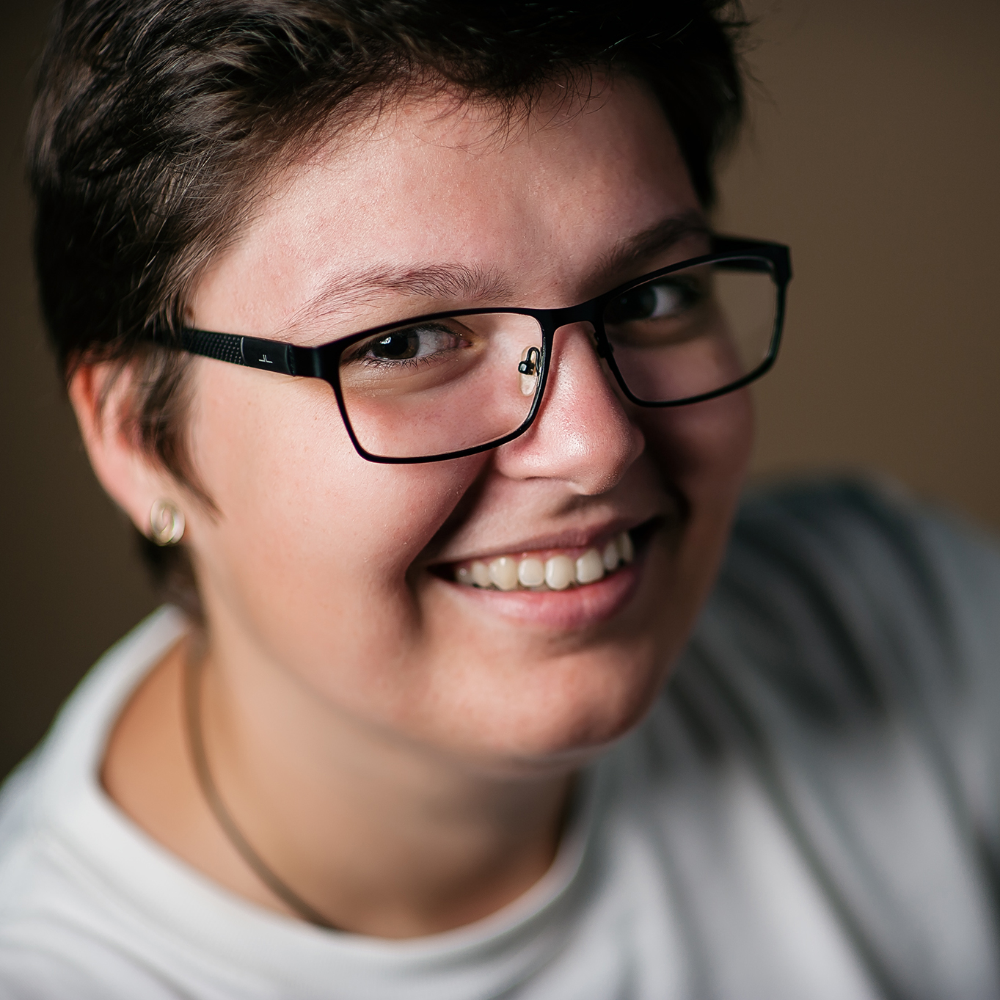

<!DOCTYPE html>
<html>
    <title>Fotograf</title>
    <meta charset="UTF-8">
    <meta name="keywords" content="layout test">
    <meta name="author" content="Simona Stanciu">
    <meta name="viewport" content="width=device-width, initial-scale=1.0">
    <link rel="stylesheet" type="text/css" href="resources/main.css">
    <link rel="stylesheet" type="text/css" href="resources/about-me.css">
    <link rel="stylesheet" href="bundles/font-awesome/css/all.css">
    <link rel="preconnect" href="https://fonts.gstatic.com">
    <link href="https://fonts.googleapis.com/css2?family=Mr+De+Haviland&family=Roboto:wght@100;300;400;500;700;900&display=swap" rel="stylesheet">
    <link href="https://fonts.googleapis.com/css2?family=Roboto:wght@100;300;400;500;700;900&display=swap" rel="stylesheet">
</html>

<body>
    <header>
        <div class="logo">
            
        </div>

        <nav> 
            <div class="menu">
                <a href="homepage.html">Home</a>
                <a href="">Portofoliu</a>
                <a href="">Servicii</a>
                <a href="">Blog</a>
                <a href="about-me.html">Despre mine</a>
                <a href="contact.html">Contact</a>
            </div>
            <div class="menu-mobile">
                <i class="fas fa-bars"></i>
            </div>
        </nav>

        <div class="social-media-links">
            <a href="https://www.facebook.com/simonastanciu.ro">facebook.</a>
            <a href="https://www.instagram.com/simonastanciu.ro">instagram.</a>
        </div>
    </header>

    <section> 
        <div class="about-me-wrapper">
            <div class="about-me-width"> 
                <div class="about-me-image-wrapper">
                    
                </div>
            </div>    
            <div class="about-me-text-wrapper">
                <div>hello! sunt Simona, fotograf de eveniment</div>
                <h4> Fotograf nunta in Constanta</h4>
                <p> <strong>Pasiunea</strong> este cuvantul cheie cand vine vorba de fotografie. Am inceput cu fotografii pentru <strong>suflet</strong>, iar urmatorul pas, firesc as spune eu, a fost fotografia de <strong>nunta</strong> si fotografia de <strong>botez</strong>.
                    <br>
                    Am inceput timid in 2013 si de atunci incerc mereu sa ma depasesc pe mine insami, sa fiu cat mai creativa si sa cresc incet, incet, atat ca om, cat si ca fotograf.
                    <br>
                    Consider ca nuntile (si botezurile) sunt despre <strong>momente</strong> si <strong>emoțiile</strong> care ne definesc viata si care merita sa fie documentate asa cum se cuvine.
                    <br>
                    Vrei sa stii mai multe despre mine?
                    <br>
                    Ma gasesti pe <a href="https://www.facebook.com/simonastanciu.ro">facebook</a> si <a href="https://www.instagram.com/simonastanciu.ro">instagram.</a></p>
                    <button type="submit">CONTACTEAZA-MA</button>
            </div>
        </div>
    </section>

    <section class="circles">
        <div> 
            <div class="circle-1">450</div>
            <div class="circle-text-1">cafele baute</div>
        </div>

        <div> 
            <div class="circle-2">63589</div>
            <div class="circle-text-2">momente fotografiate</div>
        </div>

        <div>
            <div class="circle-3">165</div>
            <div class="circle-text-3">povesti intalnite</div>
        </div>

        <div>
            <div class="circle-4">15920</div>
            <div class="circle-text-4">zambete surprise</div>
        </div>
    </section>

    <section>
        <div class="partner-icons"> 
            <div class="mywedd">
                
            </div>

            <div class="foto-cam">
                
            </div>

            <div class="wedd-mag">
                
            </div>
        </div>
    </section>

    <footer>
        <div class="footer-container">
            <div class="footer-links"> 
                <a href="">Avertizare legala</a>
                <a href="">Politica de confidentialitate</a>
                <a href="">Cookies</a>
            </div>
            <div>Simona Stanciu fotograf &copy 2021</div>
        </div>
    </footer>